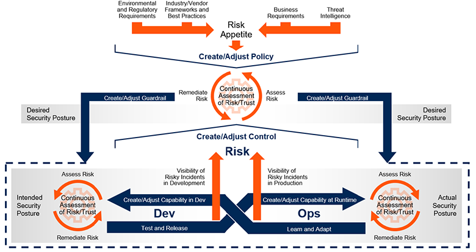

CSPM解决方案
云安全配置管理（CSPM）
公有云IaaS和PaaS服务中的高度自动化和用户自助服务，更加突出了正确的云配置和合规性的重要性。一个错误就可能立即暴露出数千个系统或大量敏感数据。云服务的采用率不断增长，加之平台服务的数量不断增加，而云技能（包括安全性）却相对匮乏，这让企业信息和工作负载暴露无遗。雪上加霜的是，对程序化云基础架构缺乏全面了解，这意味着很长一段时间都不会发现配置不正确和不合规问题。这就导致了，即便底层的云提供商基础架构本身是安全的，但大多数企业都没有准确的流程、成熟工具或规模来确保安全使用云服务。
CSPM能够对基础设施安全配置进行分析与管理。这些安全配置包括账号特权、网络和存储配置、以及安全配置（如加密设置）。如果发现配置不合规，CSPM会采取行动进行修正。如图6所示，应该将CSPM视为一个持续改进和适应云安全态势的过程，其目标是降低攻击成功的可能性，以及在攻击者获得访问权限的情况下降低发生的损害。
由于云基础架构始终处于变化之中，因此，CSPM策略应该是在云应用的整个生命周期中进行持续评估和改进的一个策略，从研发开始一直延伸到运维（图6中从左到右），并在需要时做出响应和改进。同样，由于不断提出新的云功能，不断颁发新法规，云使用安全的策略也在不断变化。图6的顶部显示，CSPM策略应不断发展并适应新的情况、不断发展的行业标准和外部威胁情报，并根据在开发和运维中观察到的风险进行改进。
